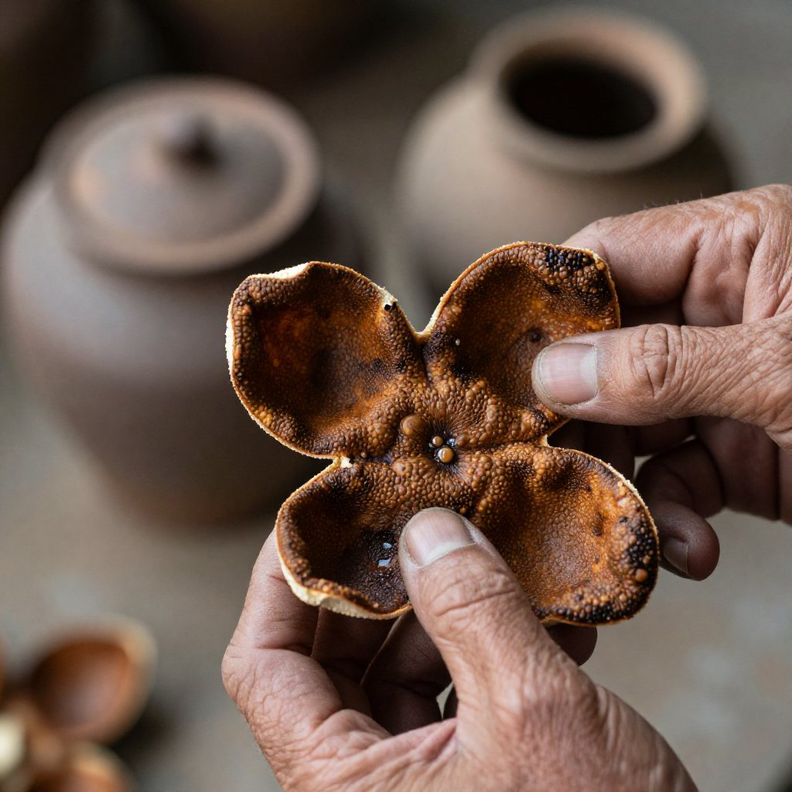
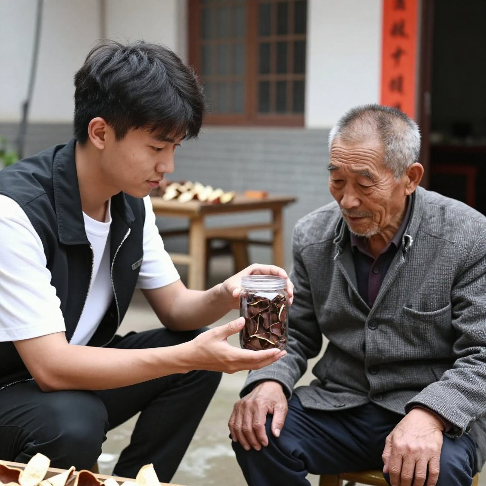

秋分一過，新會的天空變得清透而高遠。潭江與西江在這片土地上交匯，鹹淡水交融的氣息滋養着一種特別的柑橘——茶枝柑。當滿山遍野的柑果由青轉黃，匠人們便開始了一年中最忙碌的時節。國慶假期首日，飛豬數據顯示國內門票預訂量同比增長近30%（據證券時報報道），鄉村與小城迎來大批遊客；而在新會，十月起還有一件事要落地：新會柑鮮果產量逐塊田現場核定。
熱鬧歸熱鬧，真正讓人頭疼的還是那兩個字：真假。
一、灶火邊的傳承：七旬師傅的「聞皮」本領

清晨六點，天還未亮透，新會區天祿村的老師傅權伯已經坐在自家院子的矮凳上。他今年七十三歲，十七歲入行，跟着父親學習陳皮鑑別已有五十多年。院子裡擺滿了大大小小的陶缸，每一口缸裡都封存着不同年份的陳皮，空氣中那股沉靜而溫潤的香氣，彷彿能讓人瞬間安定下來。
「你聞聞呢片。」
他遞過一片呈深棕色的陳皮，手指乾瘦但眼神銳利。湊近一聞，先是一股幽深的陳香，接着是類似柑橘與檀木混合的底韻，尾調則帶着一絲近似中藥的甘苦。「這是十五年的，核心產區，圈枝柑。你再聞嗰片。」他又遞過另一片顏色同樣深沉但香氣略薄的陳皮：「呢片都係十五年，但種植環境同工藝都差一截，市場價起碼差三倍。」
權伯說，辨別新會陳皮有三重關卡——聞香、觀色、手摸。首先，真正的道地新會陳皮香氣層次豐富，「越陳越香」不是行話，而是物理事實：隨着年份增長，果皮中的揮發油逐漸氧化轉化，產生更多對人體有益的黃酮類物質，香氣從最初的清新柑橘調，慢慢蛻變為沉穩的陳香、棗香甚至樟腦香。而假冒工藝皮因經過高溫濕倉快速「做舊」，香氣渾濁單薄，有的還夾雜一股刺鼻的霉味或化學試劑殘留。
「光聞仲未夠，要睇油室。」
他將陳皮對着光，只見表皮均勻分佈着一個個細小的深色點狀結構，這就是「油室」——儲存活性成分的倉庫。新會茶枝柑的油室大而密集，在光線下清晰可見，猶如夜空中的星斗。
「油室密度決定咗陳皮嘅藥用價值。冇油室嘅，十有八九唔係茶枝柑。」
這位老師傅的這套本領，是歲月沉澱下來的智慧，也是新會陳皮文化傳承的核心——靠的不是儀器，而是幾十年與陳皮打交道累積下來的直覺與經驗。
二、年輕人的困境：直播間裡的「十年陳皮」陷阱

與權伯院子裡的沉靜不同，二十八歲的阿賢最近卻陷入了一場信任危機。他在廣州一家互聯網公司上班，平時注重養生，聽說新會陳皮對脾胃有好處，便在直播間下單了一罐標稱「十年新會陳皮」的產品。收到貨後，他興沖沖地泡水品嚐，卻發現味道寡淡，甚至帶着一股異味。
「主播講到好誇張，話係十年老皮、核心產區，一罐先三百幾。我以為執到寶。」
阿賢拿着這罐陳皮找到了權伯。老人家拿起幾片對着光看了看，又湊近聞了聞，搖了搖頭。
「唔係新會皮，更加唔係十年。呢啲係外地嘅工藝皮，用濕倉加速陳化，三個月做出『十年』嘅賣相，成本不過七八十蚊一斤。」
這並非孤例。此前媒體曝光過整條造假鏈條：有企業專門用「輕工藝」一個月速成所謂「工藝皮」，以約七十元一斤的成本冒充新會陳皮，再通過電商平台以高價售出。更惡劣的是，部分商家採購工藝皮後，直接貼上「新會陳皮」地理標誌，搖身一變成為「正宗老陳皮」。今年九月，新會陳皮、新會柑地理標誌保護專項行動監管執法組還舉辦了專項銷毀活動，持續保持打假高壓態勢。
阿賢的故事並非個案，而是當下不少消費者的縮影：想要品嚐正宗的養生好物，卻在魚龍混雜的市場中頻頻受騙。
三、破局之路：三招在手，遠離假皮
面對亂象，是否就無計可施？其實不然。掌握以下三個要點，普通人也能在市場中尋得一片真陳皮。
第一招：查溯源二維碼。新會區已建成新會陳皮數字化溯源管理系統，每一片正規出品的新會陳皮都附有證明商標準用標識和專屬溯源二維碼。購買後可掃碼查詢生產經營者信息、生產基地、倉儲環境等核心數據。而今年十月起，區、鎮、村三級幹部還會落田現場核定鮮果產量，數據一經申報不可更改——這意味着掃碼看到的產量與年份，背後多了一道實地核查。
第二招：看價格邏輯。俗話說「一兩陳皮一兩金」，道地新會陳皮的種植、採收、炮製、倉儲成本擺在那裡。五年以下的新皮市場均價約每斤150至400元；十年以上的老皮，核心產區可達每斤800至2000元不等。如果直播間或電商平台上所謂「十年新會陳皮」售價低於300元一斤，消費者就須提高警覺——低於成本線的「老陳皮」，十有八九是工藝皮的化身。
第三招：親自查驗。收到陳皮後，可自行做簡單的視覺與嗅覺核查：優質新會陳皮表皮油室清晰可見、分佈均勻；色澤隨年份由橙紅漸變為棕褐，過於漆黑或顏色不均者，可能是染色或濕倉做舊。正品陳皮香氣層次分明，久泡不散；假皮則香氣短暫，頭幾泡尚可，隨後味道急劇變淡，甚至出現怪味。
「記住一句就夠：真嘅唔怕睇，假嘅最怕你對光。」
四、陳皮的靈魂：時間才是最好的工匠
新會陳皮的珍貴，從來不僅僅在於它是一味藥材或一種食材，更在於它所承載的時間美學。明代李時珍在《本草綱目》中記載：「陳皮，苦能洩能燥，辛能散，溫能和……同補藥則補，同瀉藥則瀉，同升藥則升，同降藥則降。」
在中醫看來，陳皮的價值需要時間來成就——剛剝下的新會柑皮，燥烈之性未褪，刺激性強，猶如一匹未經馴化的野馬。唯有經過三年、五年、十年甚至更久的歲月沉澱，在溫度、濕度、空氣的共同作用下，果皮中的揮發油逐漸轉化，黃酮類物質不斷富集，才從尋常的柑橘皮蛻變為真正的養生珍品。這也是為什麼陳皮講究「陳久者良」——時間才是它最核心的生產資料。
從文化角度而言，一片陳皮裡藏着嶺南的風土人情、新會匠人的手作溫度，以及中國傳統「以時為貴」的生活哲學。當你打開一口老陶缸，取出一片經年陳化的陳皮，那股幽深的香氣不僅是活性物質的釋放，更是一段被歲月凝固的嶺南記憶。
五、給你的一段陳皮時光
如果你也想開始一段與陳皮的緣分，不妨從靠譜的渠道入手，選擇一片五至八年的新會陳皮，親自感受它的香氣層次與口感變化。用它煮一壺水，看茶湯慢慢呈現金黃透亮的色澤；或者在燉湯時加入一小片，讓陳皮的清香與食材的鮮味相互交融。
歲月無法被複製，但可以被珍藏。找一片好陳皮，就是找一個可以陪伴你慢慢變老的老朋友。
常見問題
陳皮是不是越陳越好？一般而言，三年以上的陳皮才具備良好的養生價值，十年以上藥用功效更顯著。但「越陳越好」也有邊界——儲存條件不當會導致陳皮變質，市場上標稱「三十年」「五十年」的老皮，消費者需格外謹慎查驗。
如何儲存陳皮？宜存放於通風乾燥、清潔無異味的環境，避免陽光直射與潮濕。傳統用陶缸密封保存，現代可用乾淨紙箱或食品級密封袋；潮濕天氣適當開箱通風，高溫季節避免室溫長時間超過35°C。
什麼體質的人不適合吃陳皮？陳皮性溫，胃火旺盛、口乾舌紅、舌苔黃厚的陰虛體質者不宜多食；孕婦及兒童食用前建議諮詢中醫意見；正在服藥者應諮詢醫生，因為陳皮可能影響藥物吸收。
新會陳皮和普通陳皮有什麼區別？新會陳皮以茶枝柑為唯一原料，產於特定地理環境，歷史上曾為明清皇家貢品，具國家地理標誌保護產品身份。其油室密度、活性成分含量與香氣層次均優於普通橘皮。
直播間買陳皮，最該看什麼？先看能不能提供溯源二維碼與批次檢測報告，再看價格是否落在合理區間。凡是強調「低價老皮」「祖傳十年」卻拿不出可查證信息的，直接跳過。
想現場學一次「聞皮」怎麼做？來新會陳皮村南門牌坊G04找滢滢姐，店裡常年備着熱茶；不同年份的皮擺在一起對比着聞，差異會比想像中明顯。
結語
一片陳皮，從鮮果到老皮，最短也要三年，長則二三十年。它能被造假縮短到三個月，卻永遠做不出那段時間的味道。這也是為什麼，越是亂象叢生的年份，越值得把「查碼、比價、親手驗」這三件事做足。
想當面聞一次十五年與十五年的差別，國慶假期來新會陳皮村南門牌坊G04找滢滢姐坐坐，店裡常年備着熱茶。想知道今年產區的數字化與打假進展，看這篇《陳皮熱點日報：新會產區政策密集發布，產業數字化提速》；想看一對果農夫妻怎麼熬過信任危機，翻翻這篇《新會陳皮信任危機裡的果農夫妻》。
下期預告：滢滢姐會把五年、十年、十五年三種皮擺在一起，從油室、湯色到回甘做一次橫向實測，並當場用手機掃碼示範怎麼查一片皮的「前世今生」——看完這一集，你在直播間就不容易被繞。